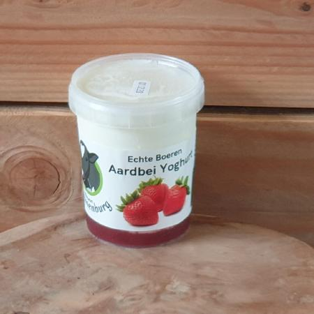
Yoghurt
Van onze eigen melk, met alleen zuursel. Smaken van echte vruchten.
Echte vruchtenMeer info
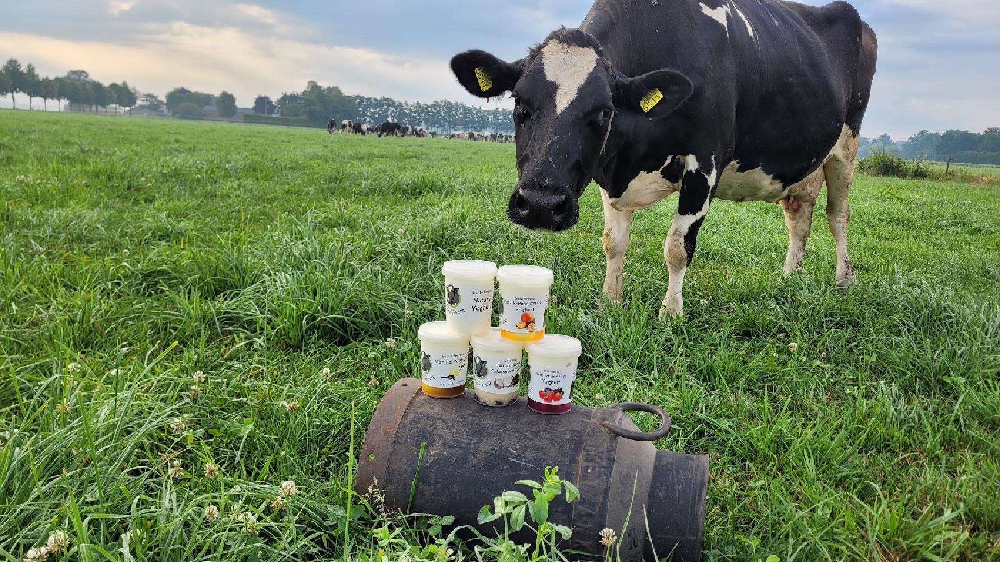
Verse melk uit de tap, yoghurt, hangop en vla. Gemaakt op onze boerderij in Roosendaal, van de melk van zo’n honderd koeien.
Birgit maakt alles zelf, van de melk van onze eigen koeien. Met echte vanille, echte cacao en echte vruchten.

Van onze eigen melk, met alleen zuursel. Smaken van echte vruchten.
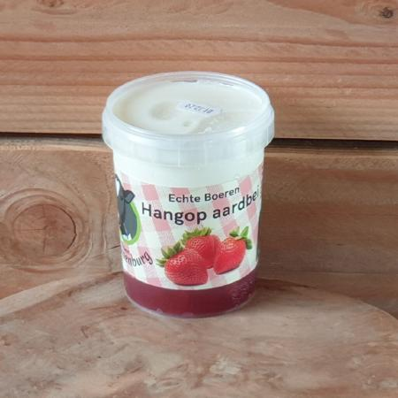
Boerenyoghurt die een dag uitlekt in een kwarkzak. Dik, zacht en romig.
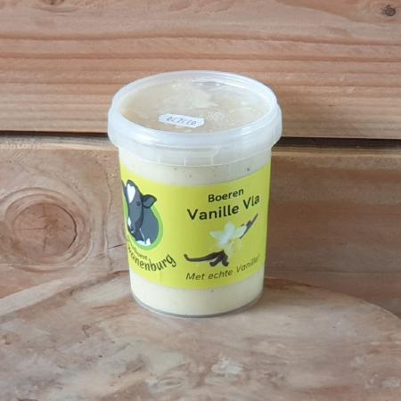
Vanillevla met echte vanille, en wisselende smaken zoals karamel-zeezout.
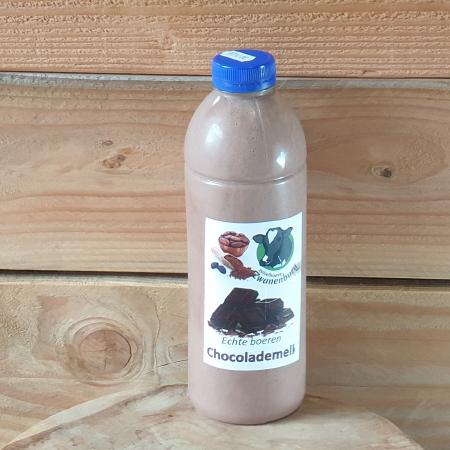
Onze melk met echte cacao. Koud lekker, warm met slagroom nog lekkerder.
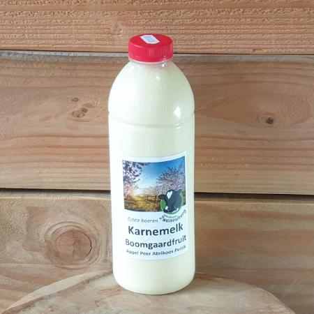
Échte karnemelk, die overblijft als we boter karnen. Dat verschil proef je.
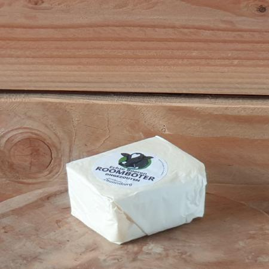
Gekarnd zoals vroeger, zonder toevoegingen. Op brood of om in te bakken.
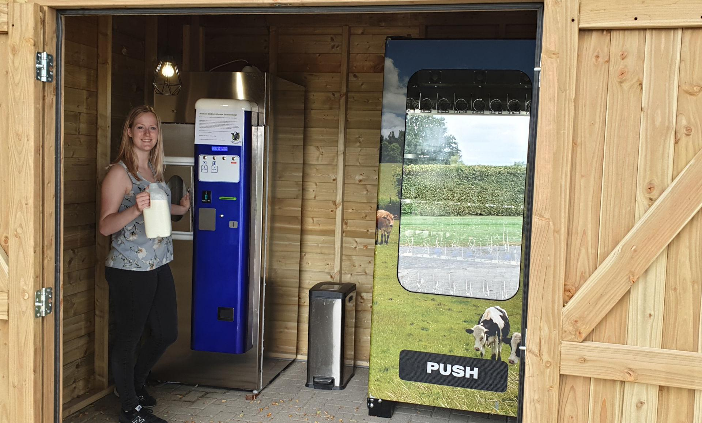
Bij ons tap je zelf je melk. Die komt rechtstreeks en onbewerkt van onze eigen koeien.
In de automaat ernaast staat onze zuivel ook als de winkel dicht is. Kom proeven hoe échte verse melk smaakt!
In de winkel vind je vlees van dieren die hier in de buurt gehouden worden en een goed leven hebben gehad.
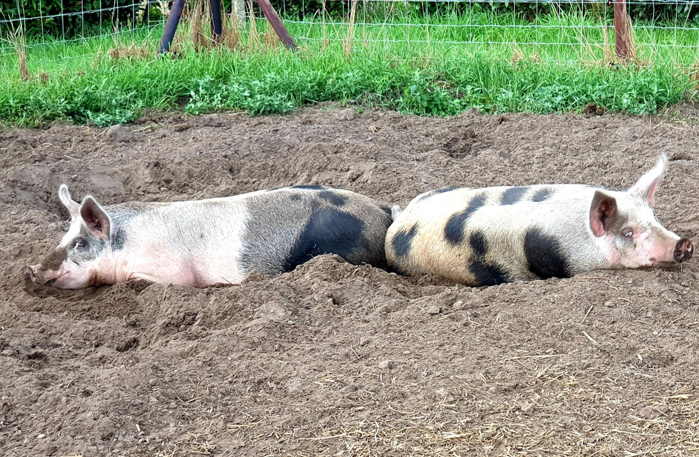
Van Anton Corsmit. Zijn varkens scharrelen van jongs af aan buiten en wroeten in het zand, kleinschalig gehouden in Nispen of bij ons op Zwanenburg. Kruidenrijk voer maakt het vlees extra smaakvol.
Lokaal geslacht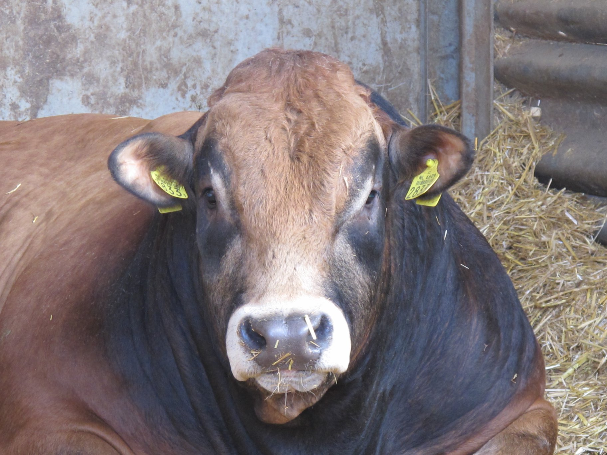
Van een stier van het Parthenaise ras, gehouden volgens de eisen van 2 sterren Beter Leven. Heerlijk mals en smaakvol.
2 sterren Beter LevenOok in de winkel: eieren, bakmixen van een lokale molen en andere streekproducten.
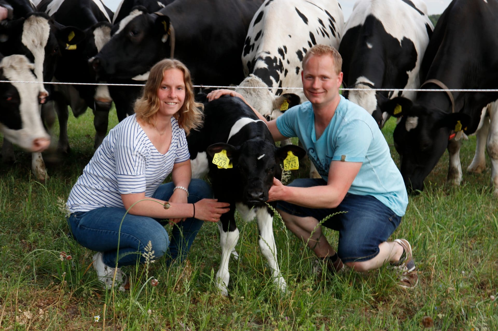
"Wil je meer weten of het met eigen ogen zien? Kom gezellig langs!"
We wonen met onze kinderen Timo en Marit op boerderij Zwanenburg. Niek runt de boerderij samen met zijn vader, Birgit maakt de hele week de zuivel en staat in de winkel.
Onze koeien lopen vrij in de wei of in de stal, en laten zich melken wanneer ze daar zelf zin in hebben. Hun voer is vooral gras en maïs van ons eigen land.
Kom je langs voor melk of zuivel, loop dan gerust even een rondje langs de koeien.
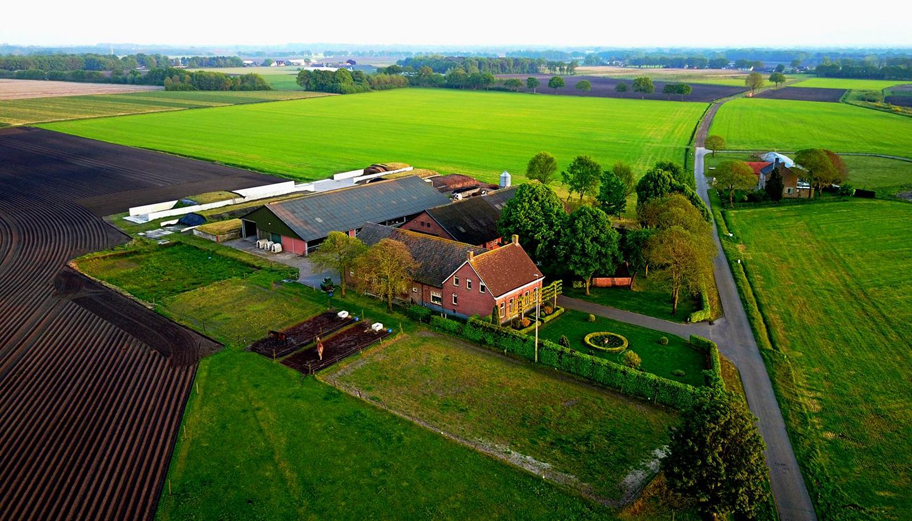
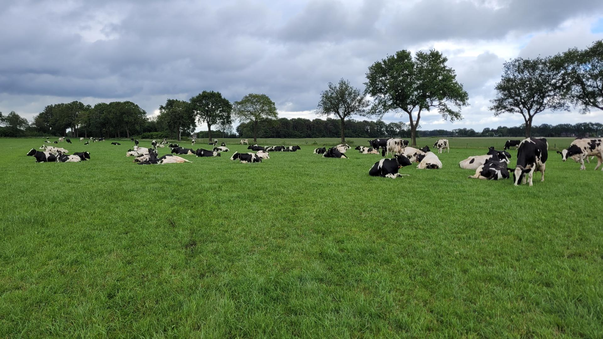
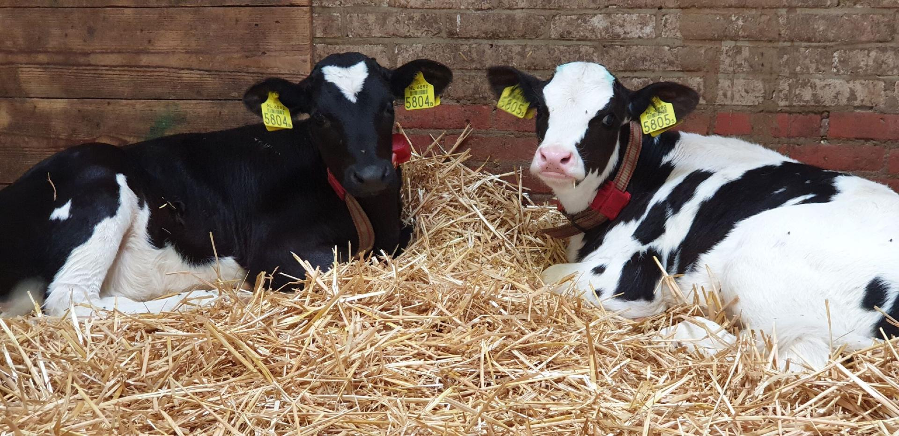
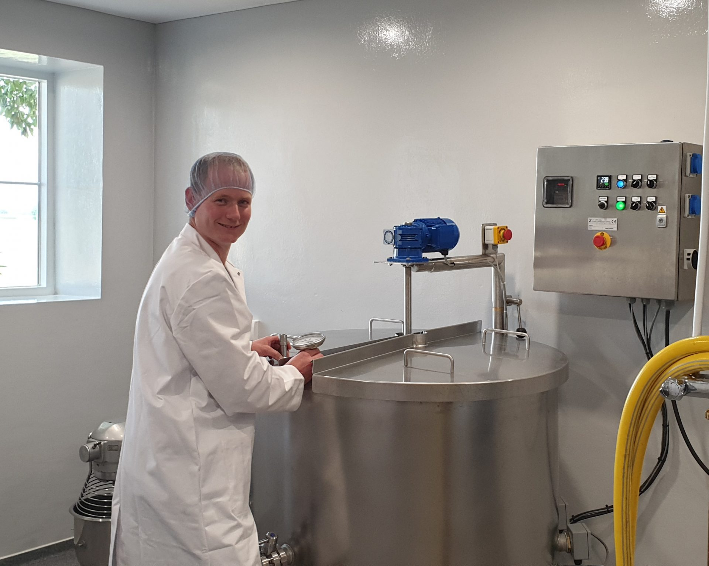
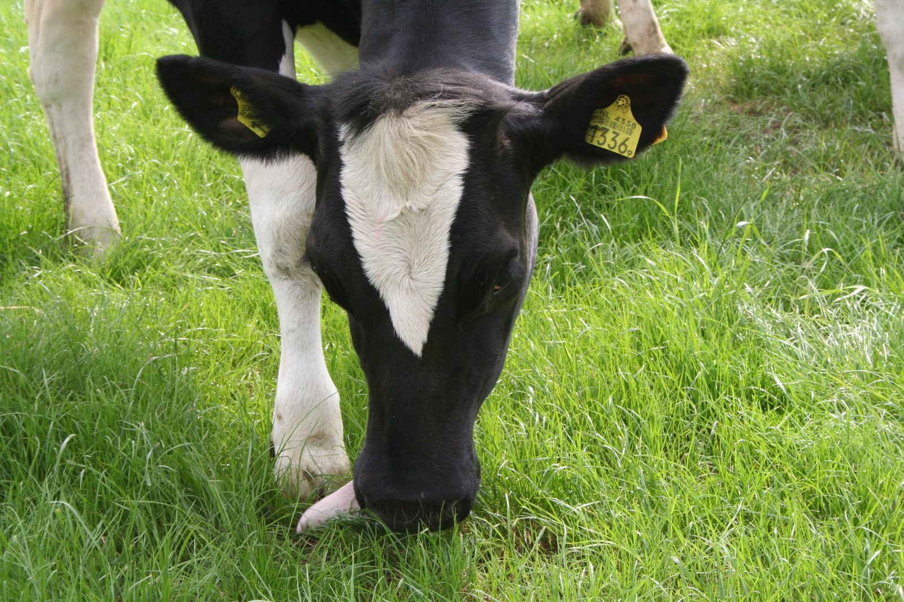
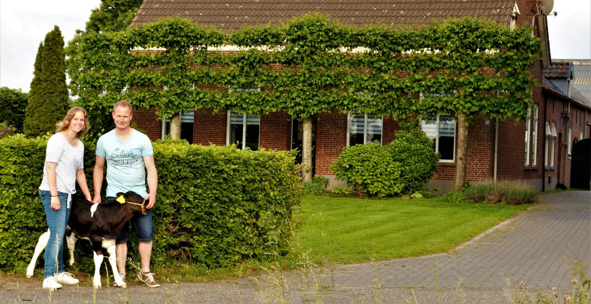
Woon je niet in de buurt? Onze zuivel ligt ook op deze adressen in West-Brabant.
Je vindt ons aan de Zwanenburgstraat in Roosendaal. Vragen? Bel of app gerust.